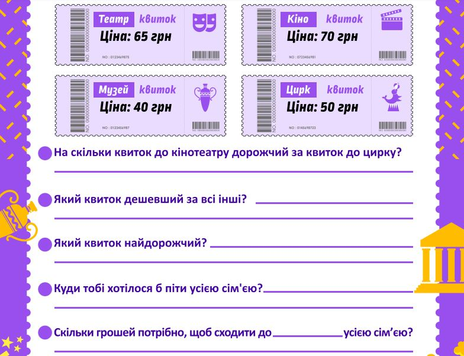

Проведіть десятий тиждень як свято театру. Розкажіть малятам про театр так, щоб їм захотілося туди піти. Розкрийте дітям історію створення театру, порівняйте це мистецтво у давні часи і сьогодні, пригадайте разом, якими бувають театри, чим вони відрізняються.
Покажіть, як дружна команда фахівців-однодумців з любов’ю та натхненням готують кожну прем’єру. Розкажіть про нелегку працю акторів, про те, скільки фахівців мають докласти свої зусилля, щоб ми побачили яскраве дійство на сцені.
Протягом тижня діти не просто дізнаються про театр, а мають змогу, влаштувавши у школі виставу, доторкнутися до цього мистецтва, відчути себе працівниками театру, на власному досвіді переконатися, як це цікаво і відповідально, адже кожна вистава — командна робота.
Пропонуємо створити разом із малятами виставу саме тіньового театру, адже для цього треба поекспериментувати з тінню, дізнатися, як вона змінюється, залежно від розташування джерела світла.
Гарної прем’єри! Щасти вам!
Бесіда-розмірковування “Навіщо потрібні театри?”.
Діалог-дослідження “Якими бувають театри?”.
Діалог-порівняння “Чим театр відрізняється від кіно?”.
Діалог-дослідження “Хто створює театральну виставу?”.
Образотворча діяльність “Готуємо афішу до вистави”.
Репетиція театральної вистави.
Влаштовуємо прем’єру.
Як створюють ляльок-маріонеток (до с. 70-71 підручника)
Як швидко створити пальчикових ляльок (до с. 73 підручника)
Як створити ляльку з елементами, що рухаються, для тіньового театру (до с. 77 підручника)
Корисні завдання
Порівнюємо ціни на квитки, вирішуємо, куди йти з рідними
Завдання допоможе дитині розвинути логіко-математичне мислення у процесі вирішення життєвих ситуацій. Дитині пропонується розглянути ціни на різних квитках: до кінотеатру, цирку, театру. Після цього потрібно відповісти на декілька запитань: на скільки квиток до кінотеатру дорожчий за квиток до цирку, який квиток дешевший за всі інші, який квиток найдорожчий? Відповіді на запитання потрібно записати. Завдання також передбачає прийняття дитиною рішення про те, куди б їй хотілося піти разом з усією сім'єю й скільки грошей потрібно для цього (вирішити це потрібно, обговоривши питання з усіма членами родини). Пропоноване завдання розвиватиме громадянську й соціальну компетентність дитини.

Казкова переплутанка (до с. 73 підручника)
Пригадуємо казки — відтворюємо послідовність подій